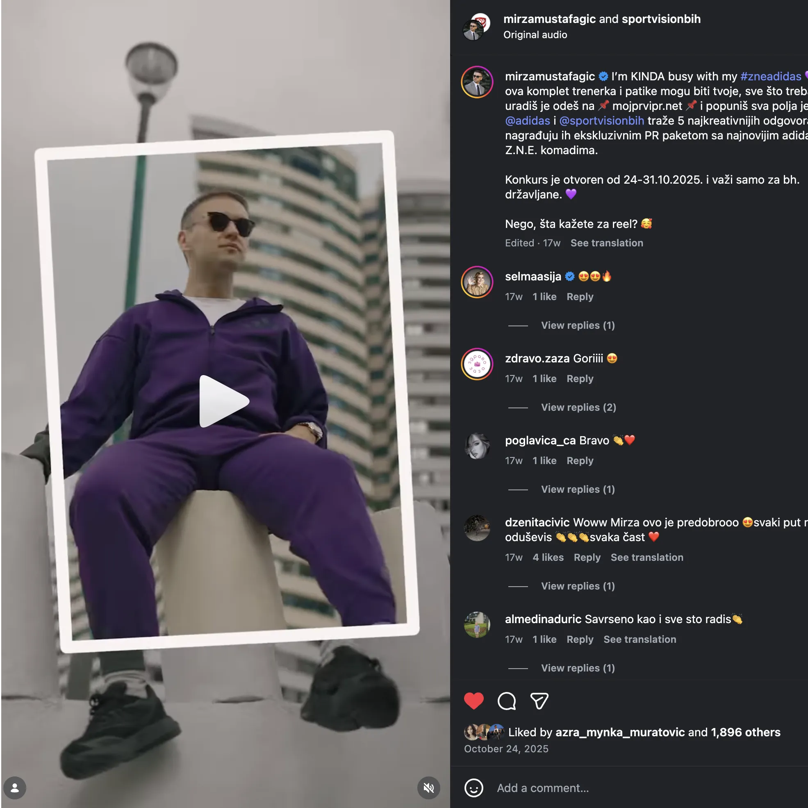
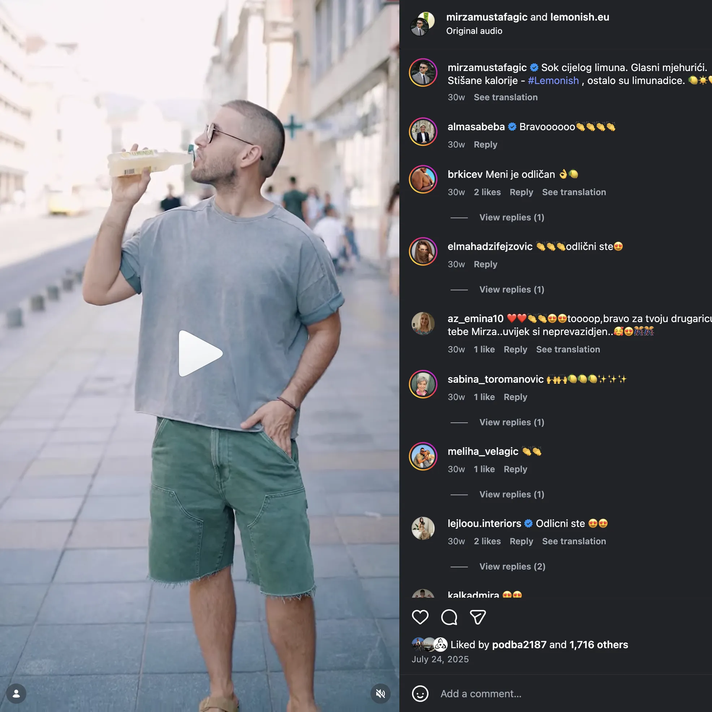
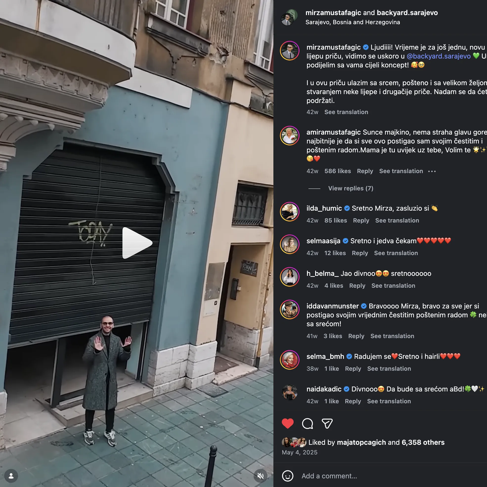

01Brief
U vremenu kad algoritmi mijenjaju pravila brže nego što izgovoriš “engagement”, kako ostati zanimljiv publici – i kad se trendovi udaljavaju?
Mirza nije samo influenser – on je narator.
Ali i najbolji naratori znaju da forma mora pratiti publiku.
A publika? Gleda. Sluša. Skroluje. I to brzo.
Digitalni svijet se mijenja iz dana u dan – pažnja je kraća, konkurencija sve glasnija, a očekivanja publike nikad viša. Zajedno smo prepoznali da je vrijeme za promjenu tempa – i formata.
Cilj? Da Mirzin sadržaj ne bude samo još jedan video u feedu. (Zvuči jednostavno, jel’ da?)
Strategija nije bila samo “više videa” – već više smisla.
02Naš zadatak?
Razviti data-driven video strategiju, optimizovati storytelling kroz kratke formate i osigurati da svaki video istovremeno bude svijet za sebe, a opet u široj slici, jedna kockica u mozaiku Mirzinog djelovanja.
Pored pregleda, cilj je bio da se kroz ovaj sadržaj prepozna glas koji Mirza njeguje godinama – da sadržaj ne liči ni na koga drugog.
Da zvuči, izgleda i osjeća se kao Mirza.
03Naš pristup
Kombinacija kreativne produkcije i strateškog pozicioniranja jer snimamo za ljude, ne za algoritme (ali i algoritmi nas vole).
Svaki reel ima jasan razlog zašto postoji.
- Brand authenticity: svaki video mora zvučati kao Mirza, izgledati kao Mirza i biti Mirza. Bez šablona, bez lažnog tona.
- Thumb-stopping content: snažni hookovi i vizuali koji prekidaju skrolanje i zadržavaju pažnju.
- Content sequencing: sadržaj osmišljen kao niz – video koji ne završava skrolanjem, već vodi na sljedeći.
Jedan od najboljih primjera toga je put u Istanbul. Reel koji smo snimili za KOC bolnicu je primjer kako storytelling i strateško planiranje mogu transformisati promo sadržaj u iskustvo.



04Reel je top, ali …
Reel može trajati do 90 sekundi, ali prve tri odlučuju sve (tako barem kažu trenutne analize). S obzirom na to da Instagram nagrađuje retention i interakciju, potrudili smo se da svaki video prođe kroz precizno osmišljen produkcijski proces, osiguravajući maksimalnu efektivnost:
- Short-form video optimization: prilagođavanje trajanja, tempa i vizuelnih elemenata ključnim metrikama performansi
- Pattern disruption techniques: korištenje dinamičnih rezova i neočekivanih vizuelnih elemenata kako bi se zadržala pažnja gledatelja
- Branded aesthetic consistency: osiguravanje da svaki reel odražava vizuelni identitet i ton komunikacije prepoznatljiv Mirzinoj publici
05Mirza, brendovi i mi
Kroz saradnju s Mirzom, imali smo priliku raditi na sadržaju za neke od najjačih brendova na našem tržištu.
Nivea, Adidas, Replay, dm, BH Telecom, Bingo, MasterCard, Cedevita i NLB Banka samo su neka od imena čije su kampanje prošle kroz naš objektiv – ne direktno, već kroz autentične influenserske priče u kojima smo bili zaduženi za koncept, video produkciju i strateški pristup.
Cilj svake kolaboracije? Kreirati iskustvo koje se gleda, pamti i dijeli. Bilo da je riječ o fashion kampanjama, beauty preporukama ili lifestyle pričama, svaki reel bio je spoj kreativne strategije i vizuelne produkcije – i to je ono na što smo najponosniji.
Note i self rimajnder: dobar content ne nastaje slučajno. Nastaje iz podataka, strategije i pravih kreativnih odluka.
06Rezultati
- +65%Povećanje reacha reelsa
- +70%Prosječan rast engagement metrika veći
- 40Kreirano reelsa s dosljednim performansama i dugoročnim efektom na brand awareness
Ovi rezultati pokazuju da marketinški pristup baziran na analitici, kreativnom storytellingu i optimizaciji distribucije donosi konkretne benefite; u ovom slučaju, jačanje Mirzinog digitalnog prisustva i produbljivanje veze s njegovom publikom.
Ok, ok – završavamo.
07Zaključak
Estetika je jedan od bitnijih aspekata video marketinga, ali ne presudni. Ovaj case study je dokaz da precizno osmišljena strategija u kojoj se svaki kadar, prelaz i format temelji na podacima, kreativnosti i razumijevanju publike, može donijeti kvalitetne rezultate. S tim da je bitno napomenuti da strategija i produkcija same po sebi nisu dovoljne jer ne smijemo zaboraviti da je osoba ispred kamere ona s kojom publika rezonuje.
I baš zato smo ponosni što imamo priliku sarađivati s nekim poput Mirze, profesionalcem koji razumije svoj brend, zna kako komunicirati sa svojom zajednicom i uvijek je spreman pomjerati granice. Kada se takva posvećenost spoji s kreativnim konceptima i strateškim pristupom, nastaju priče koje su vrijedne dijeljenja.
S Mirzom nastavljamo istraživati nove ideje, prihvatati kreativne izazove i podizati standarde video sadržaja. Jer kada se prava priča, prava strategija i prava osoba spoje, šta su, ustvar,i granice? One postaju stepenice prema gore.
See you